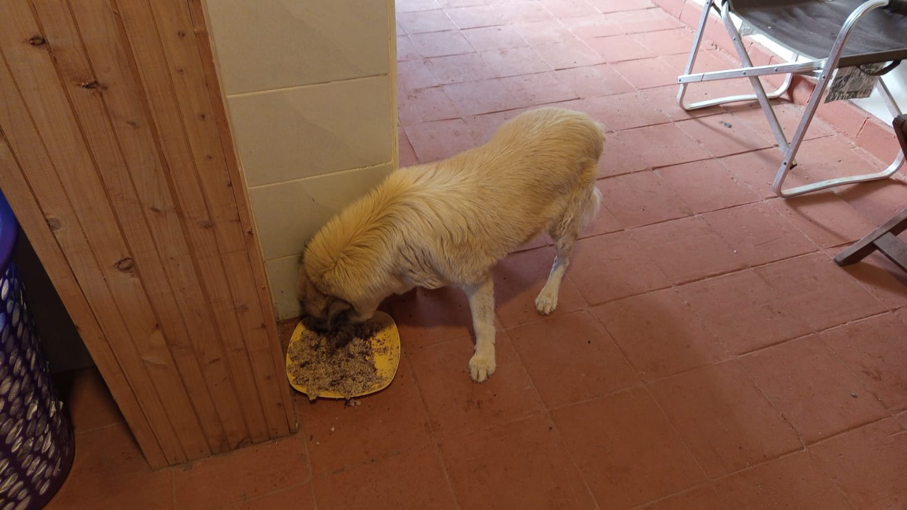

Mucheru World of Golf
Field civil works, agronomy earthwork, drainage trench backfilling, dam perimeter leveling, water intake monitoring, landscaping pit excavations, and teebox testing at Mucheru World of Golf on Monday, 9th November 2026 under the supervision of Ken and Mr. Gichuhi:
Golf Course Operational Highlights
Course engineering and agronomy teams delivered coordinated progress across putting greens, teebox platforms, drainage infrastructure, and water storage. Ground crews loosened, leveled, and shaped the rich red soil aprons surrounding Greens 6, 7, 15, and 16, establishing true contours in direct readiness for turf planting. Following technical verification of gravity waterflow through the sub-surface drainage line at Green 6, workers initiated pipe trench backfilling (ongoing to complete). Around Dam 3, laborers backfilled and carefully leveled the perimeter anchor trench where the polythene geomembrane liner was tucked in, ensuring no depression remained and blending the bank smoothly to natural ground level. Continuous water replenishment continued via gravity inlets across Dam 1, Dam 2, and Dam 3, while landscaping crews excavated pits for palm tree planting near Maina's place. Selective hand-weeding was conducted on Green 5, teebox surface leveling progressed after soil loosening, and pop-up sprinklers underwent hydraulic pressure testing.
- Red Soil Apron Loosening & Leveling (Greens 6, 7, 15 & 16): Agronomy crews loosened compacted red soil and leveled the apron collars encircling Greens 6, 7, 15, and 16 for grass planting.
- Green 6 Drainage Trench Backfilling Underway: Laborers commenced backfilling the sub-surface drainage trench at Green 6 following verification of smooth gravity waterflow (ongoing to finish).
- Dam 3 Perimeter Anchor Trench Leveled Flush: Workers backfilled and compacted the edge trench securing the Dam 3 polythene liner, eliminating depressions and restoring the bank to ground level.
- Continuous Inflows into All Dams (Dams 1, 2 & 3): Gravity supply lines actively fed continuous freshwater into Dam 1, Dam 2, and Dam 3 to replenish course irrigation reservoirs.
- Palm Tree Pits & Green 5 Selective Weeding: Planting pits were excavated near Maina's place for incoming palm trees, while selective hand-weeding was executed across Green 5 turf.
- Teebox Surface Leveling & Pop-Up Hydraulic Testing: Surface leveling progressed across the active teebox platform after loosening, alongside operational pop-up sprinkler spray testing.
18-hole putting green status audit tracking sub-surface drainage, river sand rootzone layering, red soil apron shaping, and turf readiness as of November 9, 2026:
| Green | Current Technical & Agronomic State | Milestone Status |
|---|---|---|
| Green 1 | Pop-up sprinklers confirmed functional and operational spray coverage verified (Oct 27). | Pop-Ups Functional |
| Green 2 | Pop-up sprinklers operational with pressurized spray coverage actively watering green (Oct 28). | Pop-Ups Functional |
| Green 3 | Apron red soil loosened, leveled, and shaped in readiness for grass planting (Nov 8). | Apron Leveled & Shaped |
| Green 4 | Apron red soil loosened, leveled, and shaped in readiness for grass planting (Nov 8). | Apron Leveled & Shaped |
| Green 5 Today | Dedicated hand-weeding carried out across green turf to clear invasive weeds (Nov 9). | Turf Weeded |
| Green 6 Today | Drainage trench backfilling in progress after verifying water flow; apron loosened and leveled (Nov 9). | Apron Leveled & Backfilling |
| Green 7 Today | Red soil apron loosened and leveled around green in readiness for grass planting (Nov 9). | Apron Loosened & Leveled |
| Green 8 | Apron red soil loosened, leveled, and shaped in readiness for grass planting (Nov 8). | Apron Leveled & Shaped |
| Green 9 | River sand hauled from stockpiles to Greens 12 and 16 for rootzone layering (Oct 29). | River Sand Hauled |
| Green 10 | Drainage pipe trench backfilled with soil after confirming water outflow works (Nov 8). | Drainage Backfilled |
| Green 11 | Pop-up sprinklers confirmed functional and operational spray coverage verified (Oct 27). | Pop-Ups Functional |
| Green 12 | River sand spread and leveled across putting green rootzone layer over sub-base (Oct 31). | River Sand Leveled |
| Green 13 | Pop-up sprinkler heights adjusted flush below apron level prior to apron leveling (Nov 2). | Sprinkler Height Adjusted |
| Green 14 | Pop-up sprinkler heights adjusted flush below apron level prior to apron leveling (Nov 2). | Sprinkler Height Adjusted |
| Green 15 Today | Red soil apron loosened and leveled around green in readiness for grass planting (Nov 9). | Apron Loosened & Leveled |
| Green 16 Today | Red soil apron loosened and leveled around green in readiness for grass planting (Nov 9). | Apron Loosened & Leveled |
| Green 17 | Unwanted rocks, stones, and surface debris cleared around green surrounds (Nov 6). | Surrounds Cleared |
| Green 18 | River sand applied to unapplied segments and leveled across putting green bed (Nov 5). | River Sand Applied |
18-hole championship teebox status audit tracking launch platform shaping, red soil leveling, and planting readiness as of November 9, 2026:
| Teebox | Current Technical & Earthwork State | Platform Status |
|---|---|---|
| Tee 1 | Irrigation pipe trenches excavated across platform along marked survey lines (Oct 26). | Pipe Trenches Dug |
| Tee 2 | Red soil applied halfway across platform; lateral pipe trenches backfilled (Oct 27). | Red Soil Halfway |
| Tee 3 | Red soil applied, spread, and leveled across platform; lateral pipe trenches covered (Oct 27). | Red Soil Leveled |
| Tee 4 | Irrigation pipe trenches excavated across platform along marked survey lines (Oct 26). | Pipe Trenches Dug |
| Tee 5 | Big drainage trench near teebox leveled and shaped for proper gravity water flow (Nov 6). | Trench Leveled & Shaped |
| Tee 6 | Unwanted rocks, stones, and surface debris cleared around teebox platform (Nov 6). | Rocks & Debris Cleared |
| Tee 7 | Both teebox platforms raked smooth to clear tiny rocks and pebbles in readiness for planting (Nov 7). | Raked for Planting |
| Tee 8 | Unwanted rocks, stones, and surface debris cleared around teebox platform (Nov 6). | Rocks & Debris Cleared |
| Tee 9 | Surplus red soil hauled to Teebox 7 for platform shaping and surface leveling (Oct 29). | Red Soil Hauled |
| Tee 10 | Irrigation pipe trenches excavated across platform along marked survey lines (Oct 26). | Pipe Trenches Dug |
| Tee 11 | Electric solenoid valve installed on lateral irrigation supply line (Oct 27). | Solenoid Installed |
| Tee 12 | Unwanted rocks, stones, and waste cleared around both teebox platforms (Nov 4). | Rocks & Waste Cleared |
| Tee 13 Today | Surface leveling ongoing across platform following red soil loosening (Nov 9). | Leveling Ongoing |
| Tee 14 | Red soil loosened and platform leveled in readiness for grass planting (Nov 8). | Red Soil Leveled |
| Tee 15 | Red soil loosened and platform leveled in readiness for grass planting (Nov 8). | Red Soil Leveled |
| Tee 16 | Unwanted rocks, stones, and surface debris cleared around teebox platform (Nov 6). | Rocks & Debris Cleared |
| Tee 17 | Pop-up sprinkler heights checked and adjusted flush below teebox platform level (Nov 2). | Sprinkler Height Adjusted |
| Tee 18 | Irrigation pipe trenches excavated across platform along marked survey lines (Oct 26). | Pipe Trenches Dug |
Operations Agronomy & Engineering Synthesis
Course Agronomy & Earthwork Milestones: Agronomy operations loosened, leveled, and shaped red soil aprons across Greens 6, 7, 15, and 16; Green 6 sub-surface drainage trench backfilling is actively underway following waterflow verification; Dam 3 liner perimeter anchor trench was backfilled and leveled flush to ground level; tree planting pits were excavated near Maina's place for incoming palm trees; selective turf weeding was executed on Green 5; and teebox platform surface leveling progressed following soil loosening.
Hydraulic Infrastructure: Gravity water replenishment continued steadily into Dam 1, Dam 2, and Dam 3, while hydraulic pressure testing of pop-up sprinklers was carried out across teebox platforms to confirm nozzle spray distribution.
Sequential photographic field documentation showing apron loosening and leveling on Greens 6, 7, 15, and 16, Green 6 drainage trench backfilling, Dam 3 perimeter leveling, continuous reservoir water inlets, palm tree pit excavations, Green 5 turf weeding, and teebox earthwork and pop-up testing on Monday, 9th November 2026:

Putting Green Aprons — Soil Loosening & Shaping Supervision
Joe overseeing workers loosening, raking, and leveling the red soil apron surrounding the sand green rootzone bed.

Putting Green Aprons — Finished Loosened & Leveled Collar
Wide view of a putting green featuring a sand rootzone bed completely bordered by a smoothly graded, loosened red soil apron ready for turf planting.

Putting Green Aprons — Spreading & Shaping Red Soil
Field crew shoveling and leveling red soil around the green perimeter to establish a uniform apron contour flush with the sand putting surface.

Green 6 Drainage — Trench Invert Leveling & Flow Verification
Excavated drainage trench along Green 6 with PVC drainage pipe running alongside, with workers leveling the trench bed to ensure unobstructed gravity waterflow prior to backfilling.

Dam 3 Perimeter — Edge Trench Backfilling & Leveling
Laborers using hand shovels to backfill and level the perimeter edge trench where the polythene liner is anchored, ensuring a smooth surface flush with ground level.

Dam 3 — Rising Water Level & Geomembrane Status
Dam 3 reservoir filling with water over its polythene liner, reflecting the sky with earthen banks along the perimeter.

Dam 2 — Water Inlet Line Replenishment
Inflow pipeline steadily discharging water into the lined basin of Dam 2, filling the reservoir.

Course Landscaping — Tree Pit Excavation near Maina's Place
Grounds crew digging planting pits in the grass field near the perimeter fence for upcoming palm tree planting near Maina's place.

Green 5 — Selective Turf Weeding
Worker hand-weeding invasive weeds across the green turf of Green 5 into a collection bucket to protect grass purity.

Teebox Platform — Ongoing Red Soil Surface Leveling
Workers using rakes and shovels to grade and level loosened red soil across a raised teebox platform.

Teebox Platform — Spreading & Leveling Loose Soil
Two workers leveling and raking the loosened red soil profile across the teebox playing surface next to a soil stockpile.

Teebox Platform — Completed Platform Leveling
Finished elevated teebox platform cleanly shaped and leveled with red soil after loosening, prepared for grass planting.

Teebox Irrigation — Pop-Up Sprinkler Hydraulic Testing
Pop-up sprinkler activated on a red soil teebox platform, spraying arcs of water to confirm operational line pressure and spray coverage.
Chaka Farms
Commercial dairy production, herd reproduction milestones, joint perimeter environmental sanitation, crop seedling cultivation, and canine behavioral conditioning at Chaka Farms on Monday, 9th November 2026:
Farm Operational Highlights
Dairy production logged by Kamandau yielded 8.5 Litres gross harvest (6.5L morning + 2.0L evening), 100% accounted for in Litres through 7.5 Litres commercial sales (5.5L morning + 2.0L evening) and 1.0 Litre internal farm allocations (0.5L Gladys staff ration + 0.5L Maasai). Caprine herd management celebrated a vital reproductive milestone as another doe successfully kidded at the farm goat unit, safely delivering a healthy new kid. Ken oversaw Chaka Farms personnel conducting a comprehensive litter collection walk along the shared boundary corridor between the farm hedge and golf course perimeter fence, clearing waste and windblown debris into collection sacks. Margaret and Monica carried out weeding and soil cultivation around growing maize seedlings in the farm crop plots to encourage vigorous vegetative growth. Willy completed kennel washing and sanitizing, paw command obedience drills, off-leash walking, energetic exercising, and structured kennel manners conditioning.
- 100% Quantitative Reconciliation of 8.5 Litre Dairy Harvest: Morning (6.5L) and evening (2.0L) milking produced 8.5 Litres gross harvest, fully accounted for by 7.5 Litres commercial sales, 0.5 Litres Gladys staff ration, and 0.5 Litres Maasai internal allocation with zero discrepancy.
- Caprine Herd Expansion — Successful Doe Kidding: A doe successfully gave birth to a new kid at the goat shed, expanding the farm's caprine herd under healthy conditions.
- Joint Perimeter Litter Collection Walk: Ken led Chaka Farms workers on an environmental cleanup walk along the shared farm and golf course boundary corridor, gathering windblown debris into sacks.
- Maize Crop Plot Weeding & Seedling Cultivation: Margaret and Monica weeded and cultivated soil around the growing maize seedlings to eliminate competing weeds and loosen rootzone earth.
- Canine Stall Sanitation & Paw Command Drills: Willy conducted thorough washing and disinfectant sanitizing of kennel stalls, followed by responsive paw command exercises with resident dogs.
- Off-Leash Walking, Exercise & Kennel Manners Conditioning: Resident dogs completed energetic off-leash exercise, roadway walking, and structured crate threshold manners conditioning.
Official milking production and distribution ledger for Monday, 9th November 2026, recording gross yields, commercial dispatches, and internal farm allocations:
| Session / Disbursement Channel | Morning Yield | Evening Yield | Daily Total |
|---|---|---|---|
| Commercial Milk Sales (Dispatched) | 5.5 Litres | 2.0 Litres | 7.5 Litres |
| Internal Farm Allocation — Gladys | 0.5 Litres | 0.0 Litres | 0.5 Litres |
| Internal Farm Allocation — Maasai | 0.5 Litres | 0.0 Litres | 0.5 Litres |
| Total Volume Accounted For | 6.5 Litres | 2.0 Litres | 8.5 Litres (100% Reconciled) |
Dairy Accounting & Farm Reconciliation Note
Total gross cow milk harvested of 8.5 Litres (6.5L morning + 2.0L evening) is 100% accounted for by 7.5 Litres dispatched for commercial sales (5.5L morning sale + 2.0L evening sale) and 1.0 Litre in routine internal farm disbursements (0.5L staff allocation to Gladys + 0.5L internal allocation to Maasai). In compliance with farm accounting standards, all milk volumes are recorded strictly in Litres (never kilograms), Maasai is designated strictly as Maasai with zero discrepancy, and gross production balances perfectly with zero discrepancy.
Canine behavioral conditioning routines, kennel hygiene protocols, paw command drills, off-leash exercising, and structured manners conditioning conducted on Monday, 9th November 2026 under Willy:
Field video recording capturing kennel manners conditioning, crate discipline, and handler obedience routines under Willy's guidance.
- Kennel Stall Sanitation & Hygiene Maintenance: Willy conducted thorough washing and disinfectant sanitizing across all dog kennel stalls to maintain clean living conditions.
- Paw Command Drills & Behavioral Obedience: Handlers practiced responsive paw commands with resident dogs, reinforcing handler engagement and positive compliance.
- Off-Leash Walking & Controlled Exercising: Dogs participated in energetic off-leash walking and exercise sessions across farm paddocks, encouraging healthy stamina and socialization.
- Kennel Manners Conditioning Drills: Handlers reinforced crate threshold manners and calm entry and exit protocols to maintain composed kennel discipline.
Photographic field evidence documenting the joint perimeter litter collection walk along the golf and farm boundaries on Monday, 9th November 2026:

Perimeter Sanitation — Joint Boundary Litter Collection Walk
Chaka Farms crew conducting a perimeter cleanup walk along the shared roadway between the Chaka Farms hedge and golf course fence, collecting litter in sacks.

Perimeter Sanitation — Roadway & Fence Line Waste Clearance
Workers scouring the boundary corridor, gathering windblown debris and rubbish along the fence line and hedgerow into sacks.
Kabete Residence
Residential grounds maintenance, motorized lawn mowing, perimeter edging, and domestic pet health management at Kabete Residence on Monday, 9th November 2026 overseen and shared by Njoki:
Residential Operational Highlights
Residential property care focused on manicuring the extensive landscape lawns and attentive domestic pet care. Grounds personnel operated a motorized lawn mower across the expansive front and side lawns near the main house, cutting clean, uniform stripes across the green turf. Careful trimming and edging were executed along the planted retaining wall, around potted rubber trees and monsteras, along paved veranda walkways, and beneath the elevated water storage tank tower. Domestic pet care was attentively maintained with Ajabu the Golden Retriever fed his balanced daily meal on the veranda, and resident cats Aiko and Reo fed their daily meals from clean stainless steel food bowls (Mocha was noted absent during the feeding session).
- Motorized Lawn Mowing Near Main House: Groundsmen pushed the rotary motorized mower across the broad lawn near the main house, achieving clean mowing lines and a uniform turf height.
- Perimeter Edging & Retaining Wall Lawn Care: Grass was trimmed neatly along the base of the vegetated retaining wall, stone house foundations, and paved access paths.
- Water Tower & Tree Canopy Surrounds Trimming: Mowing extended around the base of the water storage tower and decorative potted palms and monstera plants.
- Domestic Pet Care — Ajabu the Golden Retriever: Ajabu received his daily meal and attentive care on the tiled residence veranda.
- Domestic Pet Care — Resident Cats (Aiko & Reo): Resident cats Aiko and Reo were fed their meals from stainless steel bowls beside their water dish on the veranda (Mocha absent).
Photographic field evidence documenting lawn mowing near the main house, grounds manicuring, and domestic pet care on Monday, 9th November 2026:

Grounds Maintenance — Motorized Mowing Along Retaining Wall
Groundsman pushing a motorized lawn mower cutting grass along the lush planted retaining wall near the main house.
.jpeg)
Grounds Maintenance — Lawn Mowing Along Veranda Walkway
Worker mowing the residential lawn between the main house paved walkway and landscaped stone wall.

Grounds Maintenance — Precision Mowing Along Greenery
Groundsman mowing around potted rubber plants and garden borders to maintain neat turf height.

Grounds Maintenance — Lawn Cutting Near Water Tower
Worker mowing the rear lawn area near the elevated steel water storage tower, leaving clean cut stripes across the turf.
.jpeg)
Grounds Maintenance — Uniform Lawn Trimming
Groundsman guiding the motorized mower across the main garden lawn towards the house veranda.

Grounds Maintenance — Finished Manicured Main House Lawn
Expansive view of the manicured green lawn near the main house with fresh mowing patterns and irrigation garden hose after grass cutting.

Domestic Pet Care — Ajabu Daily Meal Routine
Ajabu the Golden Retriever eating his nutritious meal from a yellow feeding plate on the tiled veranda.

Domestic Pet Care — Resident Cats Aiko & Reo Feeding Session
Resident cats Aiko and Reo feeding from stainless steel bowls beside their water dish on the tiled veranda (Mocha was absent during the feeding session).